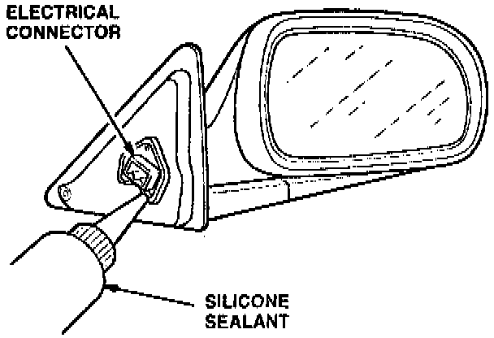

Door Mirror Sealing
Door Mirror SealingRemove the inner cover panel, test drive the car, and use a stethoscope to listen for an air leak around the mirror electrical connector. If you find an air leak, seal the electrical connector with silicone sealant.
Side View Mirror:

1. Apply silicone sealant around the edge of the electrical connector to seal it to the mirror frame.
2. Allow the sealant to dry for several minutes. Test drive the car to verify that the air leak is sealed.
3. Reinstall the inner cover panel.